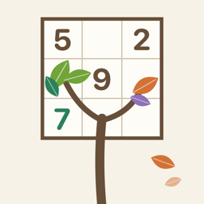

分かれ道のナンプレ
迷ったら、枝を出して試す。だめなら枝ごと1回でもどす。
9×9 のナンプレ（数独）に、「分かれ道」と「理由を見せるヒント」をつけたパズルです。
- 分かれ道：「ここは 3 か 8 か」と迷ったら、分かれ道を作って 3 を置き、そのまま先へ進めます。枝の中で置いた数字は枝の色（若葉・紅葉・藤の3段まで）で出ます
- 行き止まりになったら「枝を捨てる」。その枝で置いた数字とメモだけが、1回で消えます。うまくいったら「この道に決める」
- 理由を見せるヒント：答えを入れずに、「この列で 5 が入るのはここだけ」と、そこが決まる理由を、行・列・箱を光らせて見せます
- 行き止まりの知らせ：どの数字も入らなくなったマスに × が出ます
- 難しさは4つ（やさしい・ふつう・むずかしい・達人）。問題はアプリの中で作り、答えが1つだけになることを確かめています
- 解いている途中に、画面いっぱいの広告は出ません（画面のいちばん下の小さな広告だけです）。登録・課金はありません